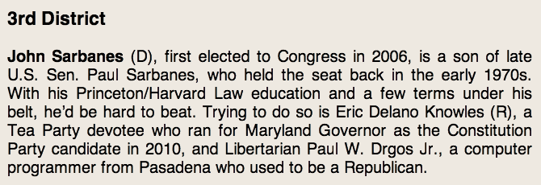

This page shows prototypes and demonstration videos for UMBC's VotingVoice project. The purpose of this project is to develop software tools to help people with aphasia (and possibly other reading-related or cognitive disabilities) to read content online, to take notes on that content, and to review it later.
This page presents some initial prototypes of VotingVoice's features to solicit feedback from stakeholders. It should work in any modern web browser.
Please view the demos below, and try out the interactive examples. At the bottom of the page, there is a link to a questionnaire where you can provide feedback on the current version. The entire process should take 15 minutes or less. Thanks for your help!
There are 4 features currently in the prototype. Each is shown in detail below.
Here are interactive examples of each of the features.
VotingVoice uses a text extraction algorithm to find the main content in a web page and strip out extraneous content, leaving only the main article text and images. This is intended to make the page easier to read.
Examples:
VotingVoice uses text-to-speech software to read parts of a web page without any extra software. To use text to speech, select some text with the mouse and click on the speak button that pops up.

Example:
Users can add notes to pages using an online annotation tool. These notes are saved on the server, and can be retrieved at any time. To add a note, drag the text, and click the Annotate button. To read the note later, mouse over (or tap) the highlighted text.
Notes can also include images. Just paste the complete address of the image into the notes field, and VotingVoice will store the image.
Finally, notes can have icon-based tags attached to them. These tags can be added to any note by clicking the icon, and are shown when the note is reviewed.
Examples:
Notes are saved on the server and can be reviewed at any time. There are several ways to review notes. Notes can be reviewed as pop-ups within the original page, printed out as a list, shown in the page margin, or viewed as a slideshow.
Examples:
You can test a complete version of the prototype, with all features active, at the following link:
Your feedback would be extremely helpful in determining the future direction of this work. We have prepared a short questionnaire about the prototype design, and would appreciate your feedback. It should take about 5 minutes to complete.
Please click here to access the questionnaire.
For other comments, questions, and feedback: email Shaun Kane.
Source code created for this project will be released under an open source license on our lab's Github page.